Creating your delegate registration tickets for your event
For event organisersNot an organiser?
In this article, you will find instructions on creating and editing your tickets, groups and add-ons for delegate registration. Plus You can learn how to purchase tickets on behalf of attendees.#
How to create a ticket
From your main dashboard, click on Registration → Tickets → Conference tickets.
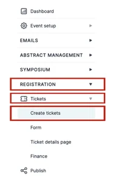
This will take you to your “ticket dashboard” where you can create, edit and delete tickets.
You can see at the top of the dashboard you have Tickets, Add-Ons and Coupons.
Naturally, the dashboard will present to you under the Ticket section.
To create a ticket click Create ticket. On a brand new event it sits in the middle of the screen; once you have a ticket it moves to the top left, beside Create group.
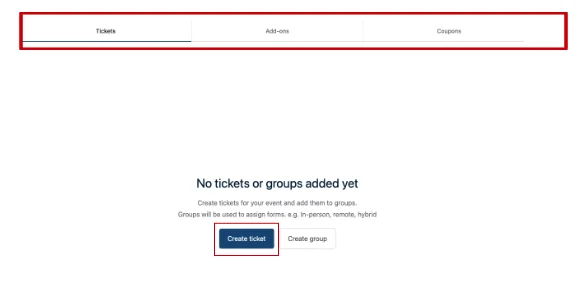
To create your ticket, you must complete the fields on the following screen.
Add the ticket name and description, i.e.:
Name - In-person ticket.
Description - The ticket allows entry to the venue for the event.
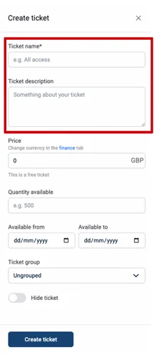
You can add the ticket price, either by typing in the price or using the arrows provided.
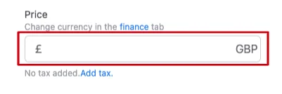
The ticket price will automatically be set to 0.00 (Free of charge).
To add the price of your ticket you need to type into the price box the cost of the ticket i.e. 25.99.
Tax is no longer set on the ticket itself. It is now a set of rules at Registration → Finance → Tax, where you can create multiple rules and apply each to all or only some of your tickets.
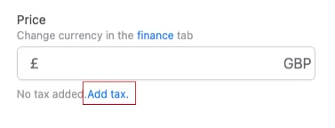
Add the number of tickets for sale to the Quantity available box.
You can also set Maximum number of tickets per order, which limits how many one person can buy in a single order.
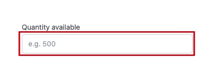
You can now select the dates your tickets will be available for purchase.
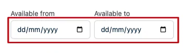
You can now select which ticket group you want this ticket to sit in (if you have created a group).
For example - these tickets are for those attending your event in-person, so they can fall into the “in-person ticket” group.
This is a handy section to have to differentiate between the tickets you are offering.
Select the arrow to the right of the box to select which group to add these tickets too.
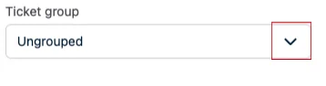
Ticket groups are not only a label. They control which registration form questions and which add-ons an attendee sees, based on the ticket they bought. If you leave every ticket ungrouped, every attendee sees every question.
If you want a ticket that only administrators can see and buy, switch on Hide ticket (visible to admins only).
When you have completed these fields click Create ticket at the bottom of the panel.
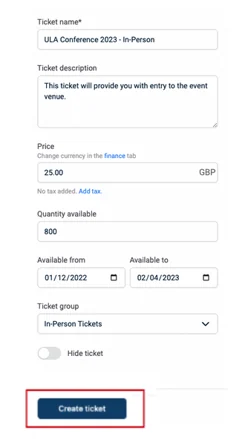
You will now be taken back to your “Ticket Dashboard”, where you can see the ticket you have created.
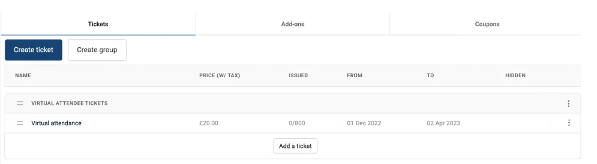
If you want to edit or delete the ticket then click the three dots at the end of the row and select edit or delete.
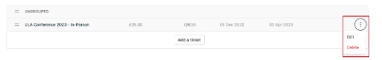
How to create a Group for your tickets
When creating the tickets you may wish to create groups to categorise your tickets into.
For example:
Your event is being attended both in-person and virtually.
So you will want to create two different types of tickets - one set for those attending the event in person and the second for those attending virtually, these can then be put into their own groups.
This will help it to be clearer for both admins and attendees to decide which ticket they need to buy.
To create a group, from your main dashboard, navigate to the column on the left, scroll down to Registration and click on the arrow next to it.
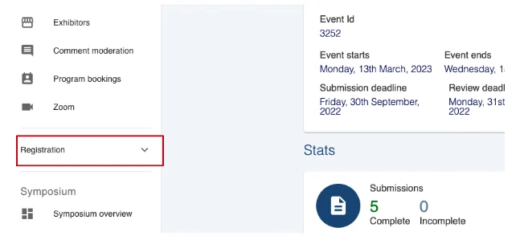
Next, click on Tickets under the Registration heading.
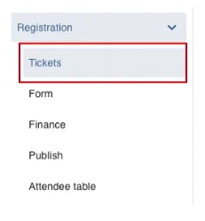
This will take you to your “Ticket Dashboard”.
If you haven’t already created your tickets, then the screen will look like the picture below. From here, you can select Create Group in the middle of the page.
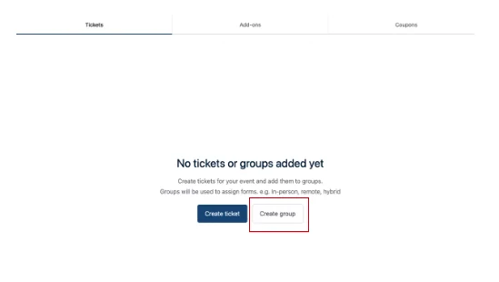
If you have already created tickets for your event, then your screen will look like the picture below.
Click on the Create Group button towards the top right of the screen.
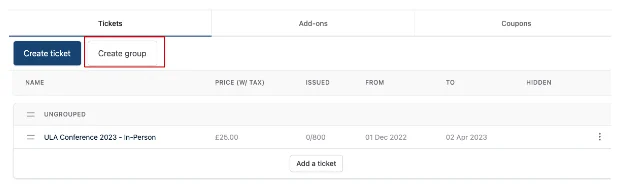
A pop-up screen will appear on the right-hand side of the page.
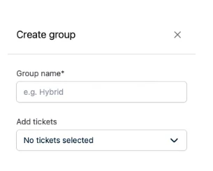
Next, you need to enter the name of the Group - i.e. Virtual Attendee event tickets and tick the box next to the tickets you would like to add to the group (if these have already been created.) If you haven't created the tickets yet, you can add these to the group later.
Then click on the Create Group button at the bottom of the screen.
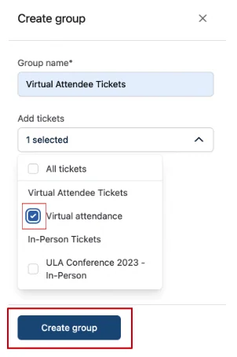
When the Create Group button has been clicked, you’ll be taken back to your “Ticket Dashboard”, where your new group will appear.
If you want to make any edits to the group after it’s been created, then select the three dots to the right of the group.
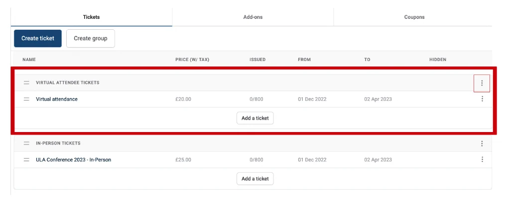
If you want to add a specific ticket to a different group then you can simply drag and drop.
Go to the two lines to the left of the ticket name click and hold, then drag the ticket to the group you want to add it to.
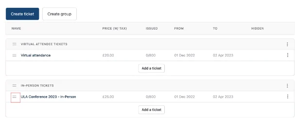
You can see the ticket has moved to a different group.
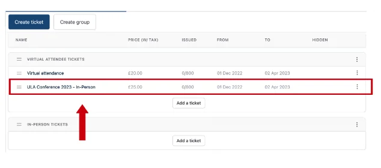
How to add Add Ons
Use add-ons to sell additional tickets to specific ticket holders. For example, you may wish to create a Gala dinner add-on only for your in-person ticket holders
To create an Add On for your tickets, you do the following:
From your main dashboard, navigate to the column on the left, scroll down to Registration and click on the arrow next to it.
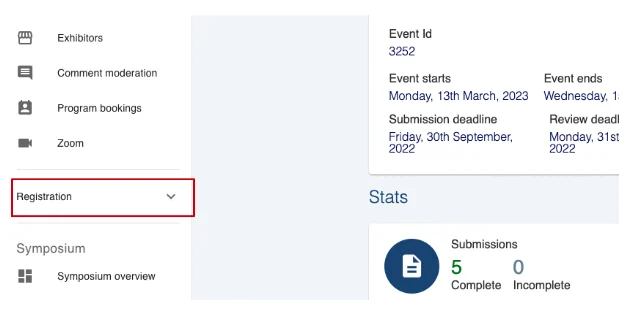
Next, click on Tickets under the Registration heading.
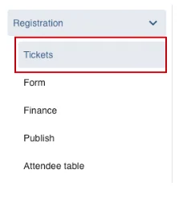
This will take you to your “Ticket Dashboard”.
Next, click on the Add-Ons tab at the top of the dashboard.
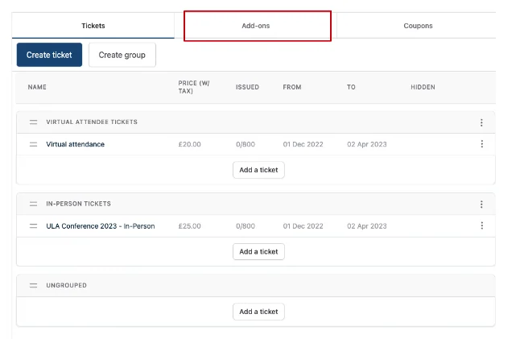
On the next screen, click on the Create Add-On button in the middle of the page.
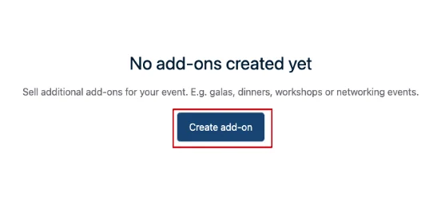
A screen will pop up to the right of the page for you to add the information required.
You’ll notice it looks exactly like the “Create ticket” screen.
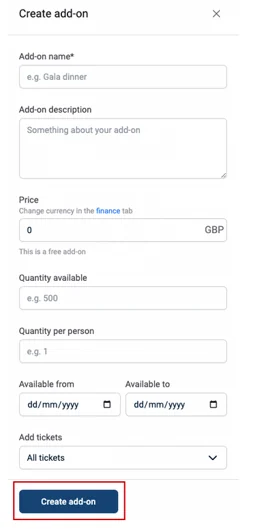
Complete the fields, and click on the Create Add-On Button.
You can then select which ticket to include this Add-On to.
Under the Add Tickets section, you can either select All tickets to include this Add-On to all tickets available, or you can select the individual tickets you want to add to.
For example:
Your event is hosting a gala dinner on the first night; therefore, only those that are attending the event In-Person will be able to go.
In this situation, you would only select the “In-person ticket” to add this too.
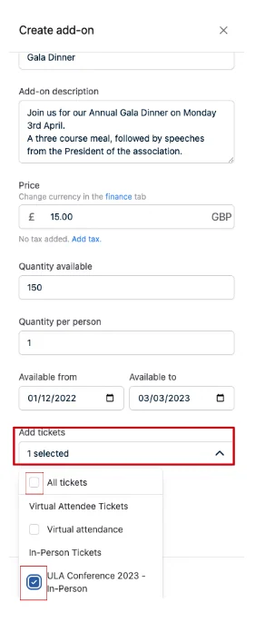
Finally, click on Create Add-On at the bottom of this screen.
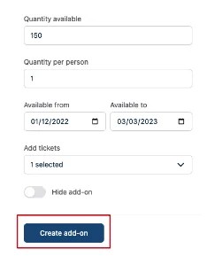
You will now see this on the Add-On tab of your Ticket Dashboard.
Should you need to edit or delete this Add-On, you can do so by clicking on the three dots at the end of the information to the right of the screen.
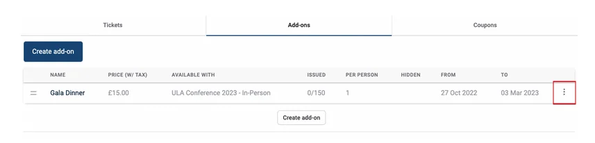
Hidden Tickets
You can purchase tickets on behalf of attendees but not allow these tickets for sale publicly.
To hide tickets, create a ticket by following the instructions above.
From your ticket dashboard click on the three dots to the right of the ticket you wish to keep hidden, and select Edit.
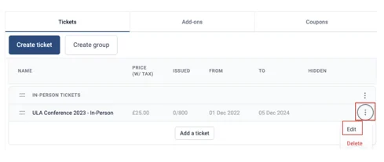
On the screen that pops up to the right, scroll down to the end and Toggle On Hide Ticket (when turned on this will turn to blue) and then click Save Ticket.
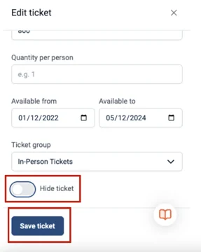
When this is done, you can go ahead and make the order on behalf of a user, without worrying anyone else will be able to purchase this ticket.
Should you require any further assistance, please contact our support desk via our Contact Form.
Didn't solve it? Ask our support team
No question is too small, and there's no charge for asking. Raise a ticket and someone who knows the software will pick it up.
Did this page solve it?
Thanks — this helps us fix it.